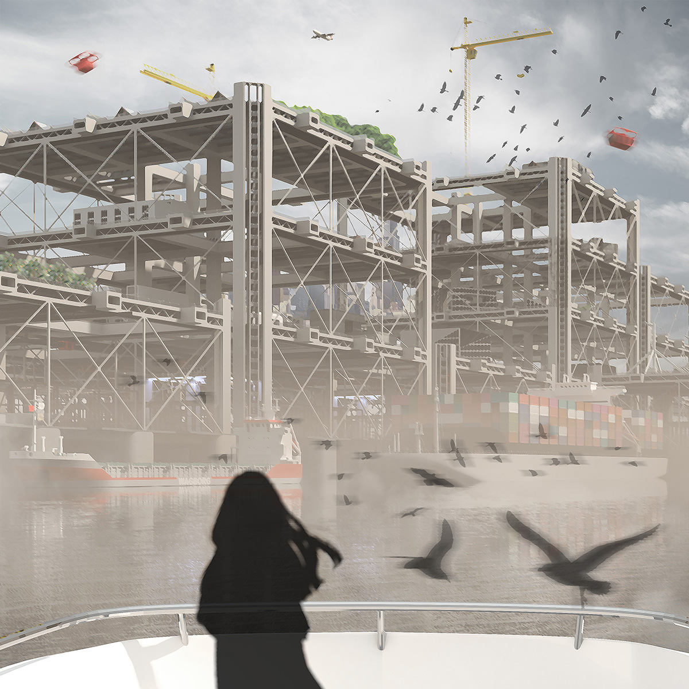
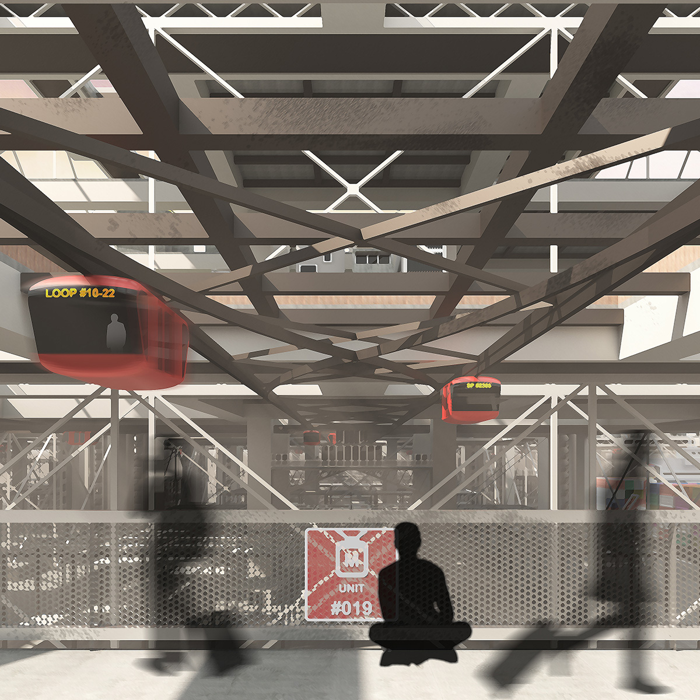
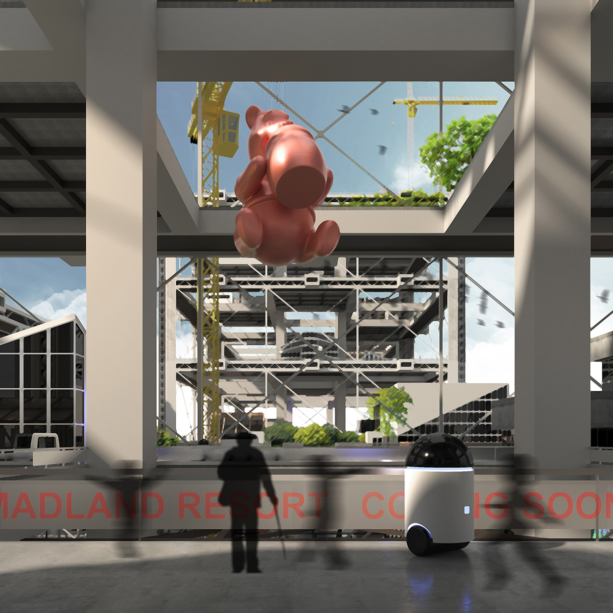
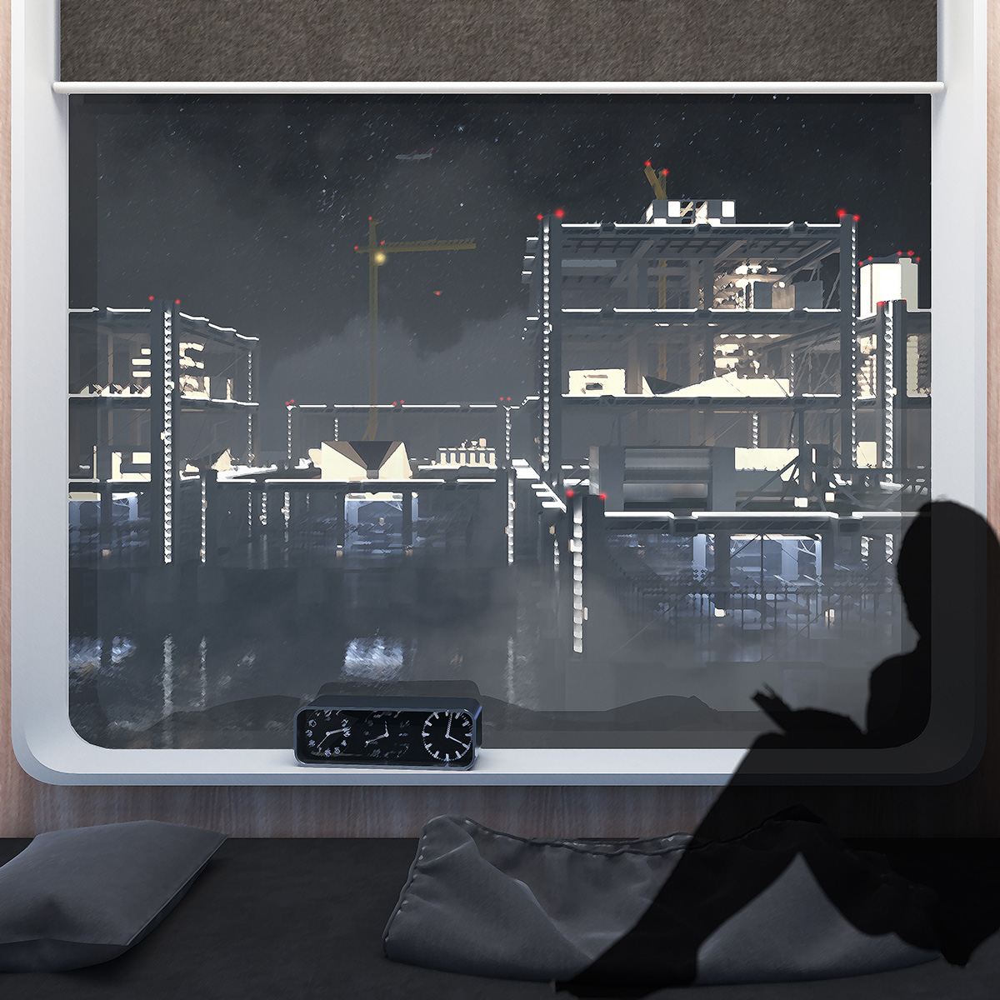

INFINITE CITY

Global urbanization is making an increasingly placeless world where everything is connected in constant flows of people and materials
but simultaneously atomized in activities, cultures, and values. As our cities grow both outward as sprawls and inward through renewals,
we find ourselves chasing new samples of opportunities and lifestyles across scales, from career investments to trendy shops. The idea of
places with social or spatial locality is gradually replaced by a network of instant destinations in displacement.
Infinite City is an open-ended exercise of architectural imagination that reflect the urban implications of placelessness on the everyday
scenes of an alternative urbanity built upon ever-growing megastructures. The modular design of megastructural units offers three-dimensional
mobility across scales while allowing properties to be built as independent urban islands. People here are always on the move to maximize
their urban experience across 'units' without establishing a physical sense of community. The project is inspired by the 20th-Century
architectural movements that advocated megastructure concepts for postwar urban growth. Instead of raising design propositions as with
the pioneers, I revisit megastructure as an artistic instrument to visualize urban implications and draw wider audiences to them through
the everyday perspectives of architectural representation. While the project is in an early stage with digital renderings and illustrations,
I plan to develop it into a multimedia narrative with animations, VR experiences, physical models, and creative writings for publication and
exhibitions.







